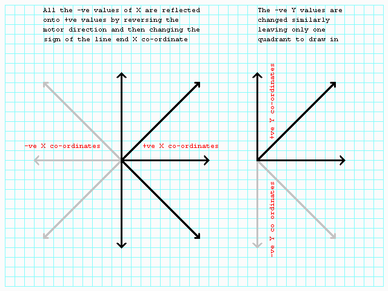
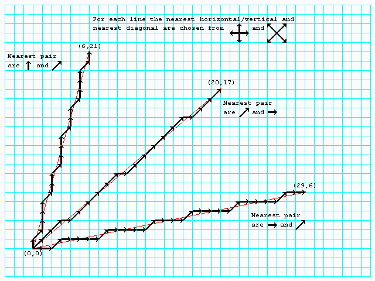

|
|
6502 Pen plotter - Drawing lines By Lee Davison. |
|
Interpolation.Because of the nature of the plotter's motors the number of possible lines that can be drawn can be halved by reversing the direction of the X axis motor in the case of lines with a -ve end X co-ordinate.
The same can be done again for lines with a -ve end Y co-ordinate. The result of this is that all possible lines can be drawn using only unsigned integer maths.

The routine.Drawing a line between any two arbitary points on a grid the exact line cannot be drawn as we are limited to either horizontals, verticals or diagonals. So to draw a representation of the line on the square lattice the program can only generate the best approximation.
The routine used by the plotter does just this. Given the distant endpoint of a line, the near endpoint is always (0,0) as all lines are drawn relative to the current pen position the routine generates the intermediate points.
The main feature of this routine is that the drawing of the line involves no multiplication or division operations so even long lines are generated quicker that they are drawn.
This graphic shows how three possible lines can be drawn using just one horizontal or vertical and one diagonal.

More to come.First the endpoint X co-ordinate is tested and if it is -ve the X motor direction is set -ve and the sign of the X co-ordinate is changed.
Next exactly the same thing is done for the endpoint Y co-ordinate.
Now both X and Y are positive and the motor step directions are set according to the original signs of the X and Y co-ordinates.
Next we test to see if the line is vertical, i.e. X = 0. If it is then we have only a simple line and no interpolation is needed as the line can be drawn with only steps along the Y axis.
If it wasn't a vertical line we then test for a horizontal line as this can be simply drawn with only X axis steps.
If it wasn't a horizontal line the final test compares the X and Y co-ordinates. If they are equal our final simple case, where the line can be drawn by stepping simultaneously along both the X and Y axes, has been found.
At this point the three simple cases have been disposed of and only lines requiring interpolation remain. The first thing to do is determine which is the bigger of X and Y. This is conviniently already available inthe carry flag as a result of the earlier X and Y compare.
Now we can set the total number of steps (always equal to the greater of X and Y) and we also know if the non diagonal step is horizontal or vertical (along the X or Y axis) from which was greater.
We also know how many diagonal moves we need to make (the smaller of X and Y) and we save this as Doublel/h. Now we can calculate the number of horizontal/vertical moves needed by subtracting this from the total number of moves and saving it as Singlel/h. P> Here is the code for the case of X gt Y.
The last thing we need is a way to decide which of the steps we need to take next as we are drawing the line. For this we use the test variable which is initialised to the smaller of X and Y minus half the number of the larger of X and Y. (This gives the smallest errors at the ends of the line, where they would be noticed most.)
| Last page update: 28th April, 2002. | e-mail me
 |